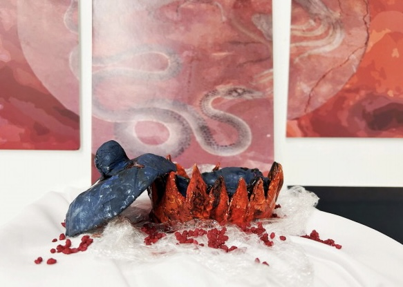

Three Poisons
This art installation is inspired by the Buddhist concept of the
Three Poisons: greed (represented by the rooster), anger
(represented by the snake), and ignorance (represented by the
pig). The piece takes the form of a cauldron-like structure,
symbolizing the cycle of suffering and transformation.
Using a combination of clay and resin, the installation blends
traditional symbolism with contemporary artistic techniques,
inviting viewers to reflect on the inner struggles that shape
human existence.